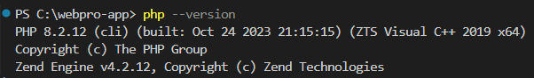
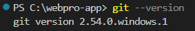
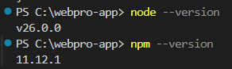

Laporan Praktikum 6 - Pemrograman Web
Konfigurasi Laravel
IF - Universitas Andalas
A. Pendahuluan
1. Pengertian Laravel
Laravel merupakan salah satu framework PHP yang populer, dikembangkan oleh Taylor Otwell. Sebagai proyek open source, Laravel dirancang untuk memudahkan pengembangan aplikasi berbasis web dengan arsitektur MVC (Model-View-Controller). Framework ini menyediakan berbagai fitur bawaan yang membantu pengembang membangun aplikasi modern secara efisien dan terstruktur.
2. Fitur Utama
Ekosistem Laravel mencakup Eloquent ORM untuk interaksi database yang intuitif, mendukung operasi CRUD dan relasi tabel. Terdapat pula Blade Templating Engine untuk tampilan dinamis, dan Artisan Console sebagai CLI pendukung otomatisasi. Keamanan juga menjadi prioritas dengan proteksi terhadap CSRF, XSS, dan SQL Injection.
3. Arsitektur MVC Laravel
Mengelola data dan database (query, insert, update).
Antarmuka pengguna (UI) yang menampilkan data. Menggunakan Blade Templating.
Menangani request dan logika sebelum dikembalikan ke view.
B. Tujuan Praktikum
Setelah menyelesaikan praktikum ini, mahasiswa diharapkan mampu:
- Mampu melakukan instalasi Laravel.
- Membuat project baru menggunakan Laravel.
- Mengenal dan memahami struktur Laravel.
- Memahami konsep arsitektur MVC (Model-View-Controller) dalam Laravel.
C. Alat
Perangkat dan dependensi yang digunakan selama praktikum:
- Computer / Laptop
- XAMPP (Apache, MySQL, PHP)
- Visual Studio Code
- Composer, GIT, Node JS, NPM
D. Langkah-langkah Praktikum
1. Instalasi dan Konfigurasi
Sebelum memulai membuat proyek Laravel kita harus menyiapkan terlebih dahulu lingkungan development, kemudian membuat project baru dan melakukan konfigurasi awal Laravel.
Laravel memiliki persyaratan minimal sistem. Adapun persyaratan Laravel 12 sebagai berikut:
Selain persyaratan diatas ada beberapa tools yang perlu diinstall yaitu Git, Composer dan Cmder (khusus windows) sifatnya opsional, serta membutuhkan Web Server (XAMPP), MySQL, dan PhpMyAdmin.
Download XAMPP pada browser atau link berikut https://www.apachefriends.org/index.html. Kemudian install sesuai dengan langkah-langkah wizard. Dengan menginstall XAMPP maka secara otomatis akan terinstall webserver apache, PHP dan PhpMyAdmin.

Download Composer pada link https://getcomposer.org/Composer-Setup.exe, selanjutnya install sesuai dengan Langkah-langkah wizard.

Download dan install GIT pada link berikut https://git-scm.com/downloads/win. GIT diperlukan untuk manajemen versi kode.

Download dan install Node JS pada link berikut https://nodejs.org/en/download/. Setelah terinstall, NPM (Node Package Manager) juga akan terinstall secara otomatis. Node JS pada Laravel berfungsi untuk menangani masalah frontedn dan build asset UI (Library UI). Lalu NPM (Node Package Manager) yang berfungsi mengelola paket untuk ekosistem Javascript

2. Membuat Project Laravel
Ada beberapa cara untuk membuat project Laravel yaitu kita menggunakan installer atau menggunakan composer.
Buat project Laravel menggunakan perintah berikut.
composer create-project laravel/laravel=^versi nama-project --prefer-dist

Gambar diatas merupakan proses saat membuat project menggunakan composer, dimana saya membuat sebuah project dengan nama webpro-app-project dengan menggunakan Laravel versi 12. Berikut tampilan jika project telah berhasil dibuat.

Setelah berhasil membuat project Laravel, selanjutnya masuk kedalam directory project Laravel dan ketikan perintah berikut.
cd nama-project npm install npm run build composer run dev
Untuk menjalankan project Laravel yang telah dibuat, gunakan perintah
php artisan serve
Untuk mengecek apakah project Laravel sudah berjalan dengan baik atau belum, bisa dengan mengakses URL http://localhost:8000 di browser atau nanti di terminal nanti akan muncul URL setelah mengetikkan perintah php artisan serve.
Jika berhasil maka akan muncul tampilan seperti gambar berikut.

Disini saya akan mencoba menampilkan tulisan "Hello World", caranya:
Masuk ke folder route, lalu klik file web.php dan masukkan kode berikut

Sesuai kode yang dimasukkan tadi jika kita cek halaman http://localhost:8000/helo maka akan muncul tulisan "Hello World"seperti berikut

E. Kesimpulan
Berdasarkan praktikum yang telah dilakukan, mahasiswa dapat memahami bahwa Laravel merupakan framework PHP yang powerful dan terstruktur untuk pengembangan aplikasi web modern. Instalasi Laravel memerlukan beberapa prasyarat utama yaitu PHP >= 8.2, XAMPP, Composer, GIT, serta Node JS dan NPM. Pembuatan project dapat dilakukan melalui Laravel Installer maupun perintah composer create-project, yang keduanya secara otomatis menghasilkan struktur direktori yang terorganisir. Arsitektur MVC yang diterapkan Laravel memisahkan tanggung jawab aplikasi secara jelas. Model mengelola data dan database, View menangani tampilan antarmuka, dan Controller memproses request serta mengembalikan response menjadikan kode lebih rapi, mudah dipelihara, dan mudah dikembangkan secara tim.
Fitur bawaan Laravel seperti Eloquent ORM, Blade Templating Engine, Artisan CLI, Routing, dan Middleware sangat membantu mempercepat proses pengembangan. Khususnya perintah php artisan serve memungkinkan menjalankan server development secara instan tanpa konfigurasi tambahan. Secara keseluruhan, praktikum ini memberikan pemahaman dasar yang kuat sebagai fondasi dasar untuk mempelajari fitur-fitur Laravel yang lebih lanjut.